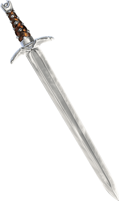
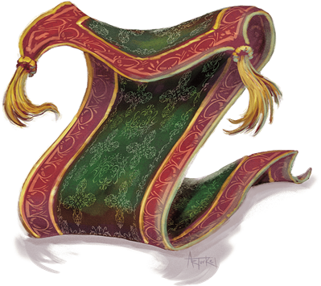

Animated Objects
Animated objects are crafted with potent magic to follow the commands of their creators. When not commanded, they follow the last order they received to the best of their ability, and can act independently to fulfill simple instructions. Some animated objects (including many of those created in the Feywild) might converse fluently or adopt a persona, but most are simple automatons.
Jump to: Animated Armor | Flying Sword | Rug of Smothering | Animated Table
Constructed Nature. An animated object doesn't require air, food, drink, or sleep.
The magic that animates an object is dispelled when the construct drops to 0 hit points. An animated object reduced to 0 hit points becomes inanimate and is too damaged to be of much use or value to anyone.
Animated Armor
This empty steel shell clamors as it moves, heavy plates banging and grinding against one another like the vengeful spirit of a fallen knight. Ponderous but persistent, this magical guardian is almost always a suit of plate armor.

To add to its menace, animated armor is frequently enchanted with scripted speech, so the armor can utter warnings, demand passwords, or deliver riddles. Rare suits of animated armor are able to carry on an actual conversation.
Environment
Summoned/Conjured
Token
Animated Armor
Medium construct, unaligned
- Armor Class 18 (natural armor)
- Hit Points 33 (6d8 + 6)
- Speed 25 ft.
STR DEX CON INT WIS CHA 14 (+2) 11 (+0) 13 (+1) 1 (-5) 3 (-4) 1 (-5)
- Proficiency Bonus +2
- Saving Throws
- Damage Vulnerabilities
- Damage Resistances
- Damage Immunities poison,psychic
- Condition Immunities blinded,charmed,deafened,exhaustion,frightened,paralyzed,petrified,poisoned
- Skills
- Senses blindsight 60 ft. (blind beyond this radius),passive Perception 6
- Languages —
- Challenge 1
Antimagic Susceptibility. The armor is incapacitated while in the area of an antimagic field. If targeted by dispel magic, the armor must succeed on a Constitution saving throw against the caster's spell save DC or fall unconscious for 1 minute.
False Appearance. While the armor remains motionless, it is indistinguishable from a normal suit of armor.
Actions
Multiattack. The armor makes two melee attacks.
Slam. Melee Weapon Attack: +4 to hit, reach 5 ft., one target. Hit: 5 (1d6 + 2) bludgeoning damage.
Flying Sword
A flying sword dances through the air, fighting with the confidence of a warrior that can't be injured. Swords are the most common weapons animated with magic. Axes, clubs, daggers, maces, spears, and even self-loading crossbows are also known to exist in animated object form.

Environment
Summoned/Conjured
Token
Flying Sword
Small construct, unaligned
- Armor Class 17 (natural armor)
- Hit Points 17 (5d6)
- Speed 0 ft., fly 50 ft. (hover)
STR DEX CON INT WIS CHA 12 (+1) 15 (+2) 11 (+0) 1 (-5) 5 (-3) 1 (-5)
- Proficiency Bonus +2
- Saving Throws Dex +4
- Damage Vulnerabilities
- Damage Resistances
- Damage Immunities poison,psychic
- Condition Immunities blinded,charmed,deafened,frightened,paralyzed,petrified,poisoned
- Skills
- Senses blindsight 60 ft. (blind beyond this radius),passive Perception 7
- Languages —
- Challenge 1/4
Antimagic Susceptibility. The sword is incapacitated while in the area of an antimagic field. If targeted by dispel magic, the sword must succeed on a Constitution saving throw against the caster's spell save DC or fall unconscious for 1 minute.
False Appearance. While the sword remains motionless and isn't flying, it is indistinguishable from a normal sword.
Actions
Longsword. Melee Weapon Attack: +3 to hit, reach 5 ft., one target. Hit: 5 (1d8 + 1) slashing damage.
Rug of Smothering
Would-be thieves and careless heroes arrive at the doorsteps of an enemy's abode, eyes and ears alert for traps, only to end their quest prematurely as the rugs beneath their feet animate and smother them to death.

A rug of smothering can be made in many different forms, from a finely woven carpet fit for a queen to a coarse mat in a peasant's hovel. Creatures with the ability to sense magic detect the rug's false magical aura.
In some cases, a rug of smothering is disguised as a carpet of flying or another beneficial magic item. However, a character who stands or sits on the rug, or who attempts to utter a word of command, is quickly trapped as the rug of smothering rolls itself tightly around its victim.
Environment
Summoned/Conjured
Token
Rug of Smothering
Large construct, unaligned
- Armor Class 12
- Hit Points 33 (6d10)
- Speed 10 ft.
STR DEX CON INT WIS CHA 17 (+3) 14 (+2) 10 (+0) 1 (-5) 3 (-4) 1 (-5)
- Proficiency Bonus +2
- Saving Throws
- Damage Vulnerabilities
- Damage Resistances
- Damage Immunities poison,psychic
- Condition Immunities blinded,charmed,deafened,frightened,paralyzed,petrified,poisoned
- Skills
- Senses blindsight 60 ft. (blind beyond this radius),passive Perception 6
- Languages —
- Challenge 2
Antimagic Susceptibility. The rug is incapacitated while in the area of an antimagic field. If targeted by dispel magic, the rug must succeed on a Constitution saving throw against the caster's spell save DC or fall unconscious for 1 minute.
Damage Transfer. While it is grappling a creature, the rug takes only half the damage dealt to it, and the creature grappled by the rug takes the other half.
False Appearance. While the rug remains motionless, it is indistinguishable from a normal rug.
Actions
Smother. Melee Weapon Attack: +5 to hit, reach 5 ft., one Medium or smaller creature. Hit: The creature is grappled (escape DC 13). Until this grapple ends, the target is restrained, blinded, and at risk of suffocating, and the rug can't smother another target. In addition, at the start of each of the target's turns, the target takes 10 (2d6 + 3) bludgeoning damage.
Animated Table
(No description given)
Environment
Summoned/Conjured
Token
Animated Table
Large Construct, Unaligned
- Armor Class 15 (natural armor)
- Hit Points 39 (6d10 + 6)
- Speed 40 ft.
STR DEX CON INT WIS CHA 18 (+4) 8 (-1) 13 (+1) 1 (-5) 3 (-4) 1 (-5)
- Proficiency Bonus Proficiency Bonus
- Saving Throws
- Damage Vulnerabilities
- Damage Resistances
- Damage Immunities Poison,Psychic
- Condition Immunities Blinded,Charmed,Deafened,Exhaustion,Frightened,Paralyzed,Petrified,Poisoned
- Skills
- Senses Blindsight 60 ft. (blind beyond this radius),Passive Perception 6
- Languages --
- Challenge 2
Antimagic Susceptibility. The table is incapacitated while in the area of an antimagic field. If targeted by dispel magic, the table must succeed on a Constitution saving throw against the caster's spell save DC or fall unconscious for 1 minute.
False Appearance. While the table remains motionless, it is indistinguishable from a normal table.
Charge. If the table moves at least 20 feet straight toward a target and then hits it with a ram attack on the same turn, the target takes an extra 9 (2d8) bludgeoning damage. If the target is a creature, it must succeed on a DC 15 Strength saving throw or be knocked prone.
Actions
Ram. Melee Weapon Attack: +6 to hit, reach 5 ft., one target. Hit: 13 (2d8 + 4) bludgeoning damage.